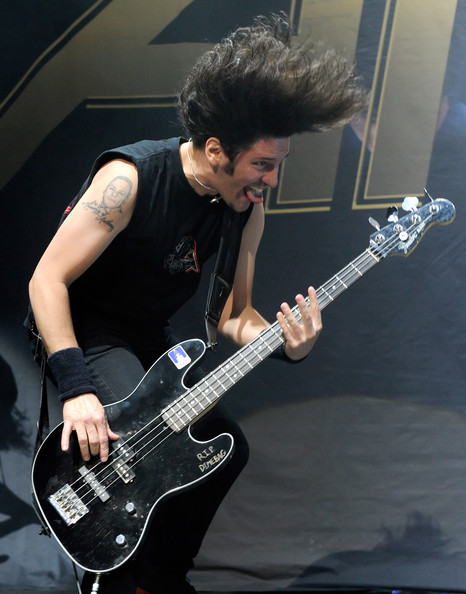

Bello considera a Anthrax en la cima

Tras el éxito obtenido por su úlrimo disco, el bajista de la banda de thrash metal "Anthrax", considera que se encuentran en el mejor momento de su carrera:
Frank contó en resumidas cuentas que en estos momentos. auqnue piensen en tomar un descanso simplemente no han tenido tiempo debido a la demanda de nuevas giras, una de ellas junto a Iron Maidden, asimismo considera que el éxito en 2016 ha sido increíble
Scott Ian solo espera el si de Hetfield y Lars
Han pasado algunos años desde que los 4 grandes del thrash metal se reunieron, y Scott Ian, guitarrista de Anthrax cree que ya es hora de un nuevo concierto.
Ian afirmó que la realización, depende de la banda que genera más expectativa de los 4 grandes (Metallica), en especial de el guitarrista James Hetfield y el baterista Lars Ulrich. Si estos dos hombres dan el si, es muy probable que el tour se realice, donde también hace años Scott Ian afirmó que México estaba preparado para este tipo de conciertos.